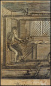

What other "women's work" paid less than midwifery? What men's work paid less than midwifery?

from The Book of Trades, Part III. Whitehall, Pennsylvania: Dickson, Printer, 1807.
Weaver: It is a business that requires no great degree of strength, and a lad may be bound apprentice to it at twelve or thirteen years of age. Among weavers are frequently found men of a thoughtful and literary turn."
|
Daily Wages, Hallowell, Maine, 1785-1790
|
| Work | Wages (approximate) |
|
| Surveying | 9s. |
| Writing plans | 7 |
| Midwifery | 6 |
| Appraising an estate | 6 |
| Labor of a man and ox | 5 |
| Millwork | 4 |
| Splitting staves | 4 |
| Weaving | 3-4 |
| Planting, reaping, unloading sloop, etc. | 3 |
| Washing | 2 |
| General work (young male) | 2 |
| General work (young female) | 1 |
|
Sources: Martha Moore Ballard Diary, Maine State Library; Luke Barton Accounts, Maine State Museum; Lincoln County Court Records, Suffolk County Court House; Samuel and William Howard Account Books, Maine Historical Society; Kennebec Purchase Company Papers, Maine Historical Society.
|
continue...
|
Midwifery was a skilled calling that paid well.
|